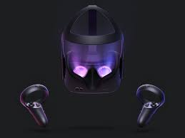

La Realidad Virtual (RV) ha sido durante mucho tiempo un sueño de la ciencia ficción, pero en las últimas décadas, esta tecnología ha pasado de ser una idea futurista a una realidad cotidiana. La RV nos sumerge en un mundo digital tridimensional, donde nuestros sentidos se engañan de manera sorprendentemente convincente para experimentar lugares y situaciones que de otra manera serían inaccesibles. Desde aplicaciones en entretenimiento hasta la medicina y la educación, la RV está desbloqueando nuevas formas de interacción y aprendizaje.
El avance clave que ha impulsado la RV es el desarrollo de hardware y software cada vez más poderosos. Los auriculares de RV, como Oculus Rift y HTC Vive, ofrecen una inmersión visual y auditiva impresionante, mientras que los guantes y trajes hápticos permiten la retroalimentación táctil y el seguimiento preciso del movimiento del cuerpo. Además, la capacidad de procesamiento de los dispositivos modernos permite una representación gráfica realista y una interacción fluida. La RV está impulsada por tecnologías como la realidad aumentada, la inteligencia artificial y la computación en la nube, que permiten experiencias cada vez más sofisticadas.

Ref. Oculus Rift 2
La RV no se limita al mundo del entretenimiento. En la medicina, se utiliza para entrenar a cirujanos en procedimientos delicados antes de entrar al quirófano. En la educación, permite a los estudiantes explorar lugares históricos o viajar por el espacio en lecciones interactivas. En la industria, agiliza el diseño de productos y la formación de empleados. Incluso en el ámbito terapéutico, se emplea para tratar fobias y trastornos de estrés postraumático. La RV está en todas partes, mejorando la forma en que vivimos, aprendemos y trabajamos.
Desafíos y Oportunidades
Sin embargo, con estos avances vienen desafíos significativos. La RV plantea cuestiones éticas sobre la privacidad y la seguridad de los datos personales. También existe la preocupación de que la adicción a la RV pueda aislarnos de la realidad física. Pero a medida que abordamos estos desafíos, también debemos abrazar las oportunidades que ofrece la RV. La capacidad de viajar virtualmente a lugares remotos, experimentar la historia de primera mano y colaborar con personas de todo el mundo promete un futuro emocionante y lleno de posibilidades.
Ref. Vr Privacy
La Realidad Virtual es una herramienta poderosa que está transformando la forma en que interactuamos con la tecnología y el mundo que nos rodea. A medida que la tecnología continúa avanzando, podemos esperar experiencias de RV aún más asombrosas e impactantes en áreas que aún no hemos imaginado. La RV es un viaje que apenas comienza, y nos espera un futuro emocionante en el que la línea entre la realidad y la virtualidad se difumina cada vez más. La pregunta que debemos hacernos es: ¿dónde nos llevará esta increíble travesía hacia el futuro?